AFC - Confederação Asiática de Futebol

A AFC é o órgão governante do futebol, futebol de praia e futsal na maioria dos países e territórios da Ásia.
.
Federação de Futebol da ASEAN (AFF) - 12
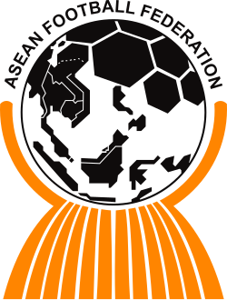Federação de Futebol da Austrália (FFA)
Clubes da Austrália:
Associação de Futebol de Brunei Darussalam (FABD)
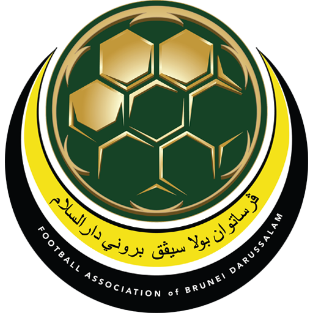Clubes do Brunei:
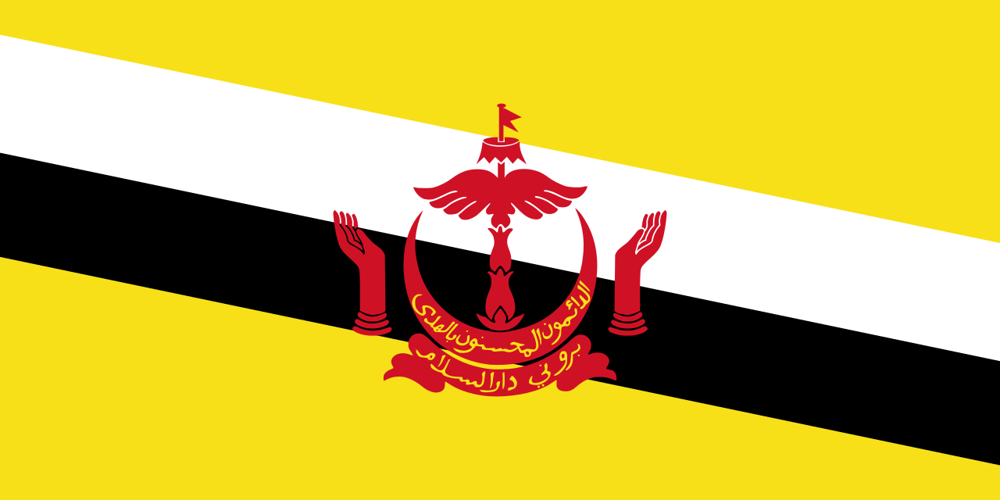Federação de Futebol do Camboja (FFC)
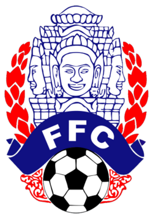Clubes do Camboja:
Associação de Futebol da Indonésia (PSSI)
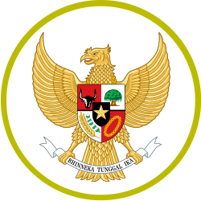Clubes da Indonésia:
Federação Laociana de Futebol (LFF)
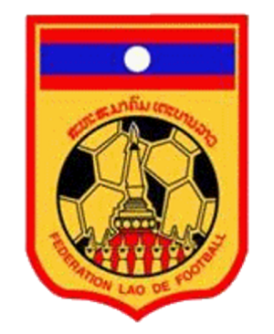Clubes do Laos:

Associação de Futebol da Malásia (FAM)
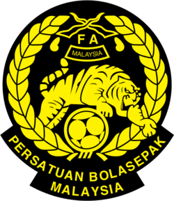Clubes da Malásia:
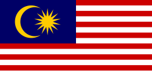Federação de Futebol de Myanmar (MFF)
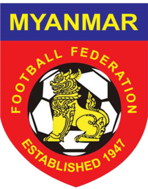Clubes do Myanmar:
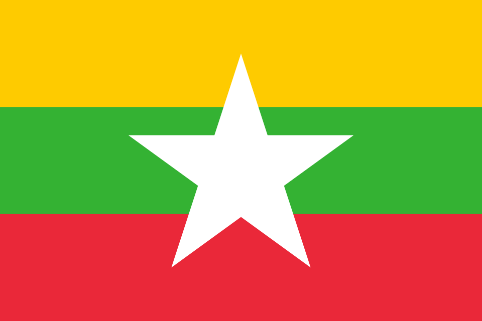Federação de Futebol das Filipinas (PFF)
Clubes das Filipinas:
Associação de Futebol de Singapura (FAS)
Clubes do Singapura:

Associação de Futebol da Tailândia (FAT)
Clubes da Tailândia:
Federação de Futebol de Timor-Leste (FFTL)
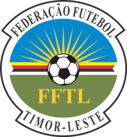Clubes do Timor-Leste:
Federação de Futebol do Vietnã (VFF)
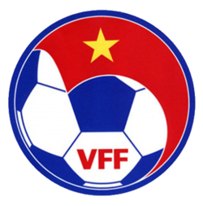Clubes do Vietnã:
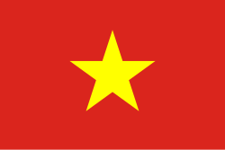
.
Associação de Futebol da Ásia Central (CAFA) - 6
Federação de Futebol do Afeganistão (AFF)
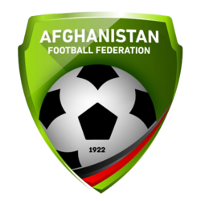Clubes do Afeganistão:
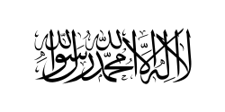Federação de Futebol da República Islâmica do Irã (FFIRI)
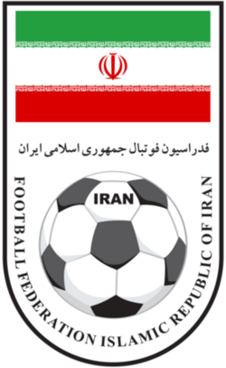Clubes do Irã:
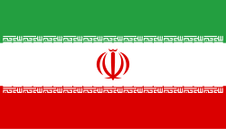Federação de Futebol da República Quirguiz (FFKR)
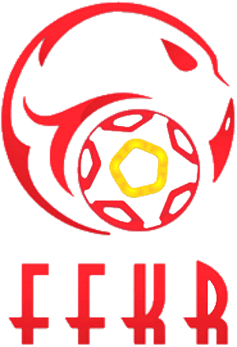Clubes do Quirguistão:
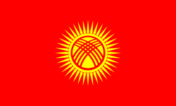Federação de Futebol do Tadjiquistão (FFT)
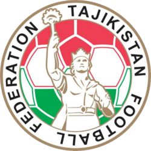Clubes do Tadjiquistão:
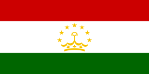Federação de Futebol do Turcomenistão (FFT)
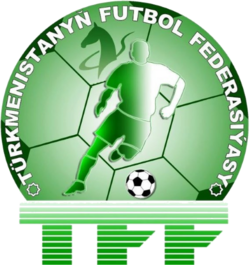Clubes do Turcomenistão:
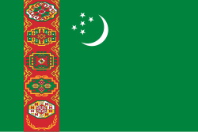Federação de Futebol do Uzbequistão (UFF)
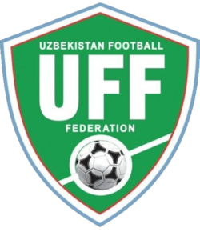Clubes do Uzbequistão:
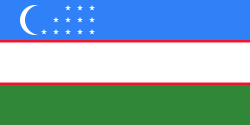
.
Federação de Futebol do Leste Asiático (EAFF) - 10
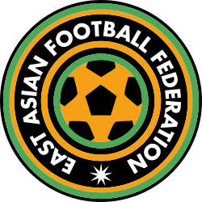Associação Chinesa de futebol (CFA)
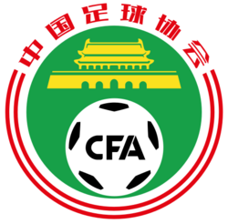Clubes da China:
Associação de Futebol da República Popular Democrática da Coreia (PRKFA)
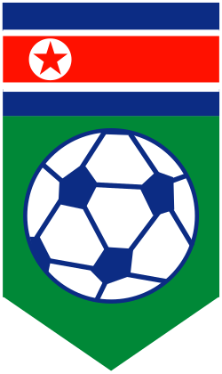Clubes da Coreia do Norte:

Clubes da Coreia do Sul:
Associação de Futebol de Guam (GFA)
Clubes do Guam:
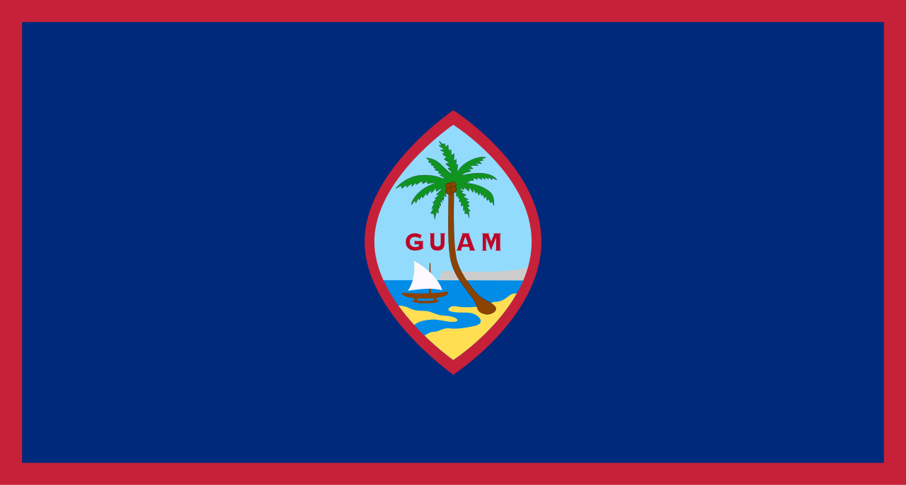Associação de Futebol de Hong Kong (HKFA)
Clubes de Hong Kong:
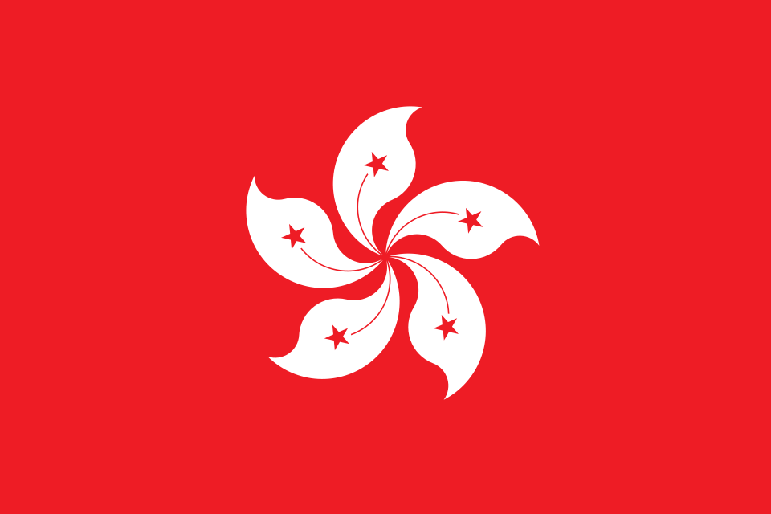Associação de Futebol do Japão (JFA)
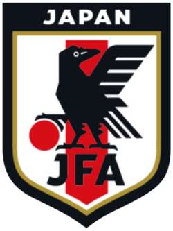Clubes do Japão :
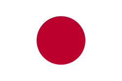Associação de Futebol de Macau (AFM)
Clubes do Macau:
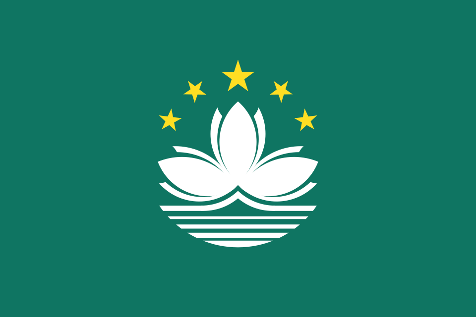
Clubes das Ilhas Marianas Setentrionais:

Federação de Futebol da Mongólia (MFF)
Clubes da Mongólia:
Associação de Futebol de Taipé Chinês (CTFA)
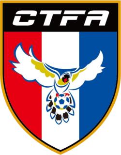Clubes do Taipé Chinês (Taiwan) :
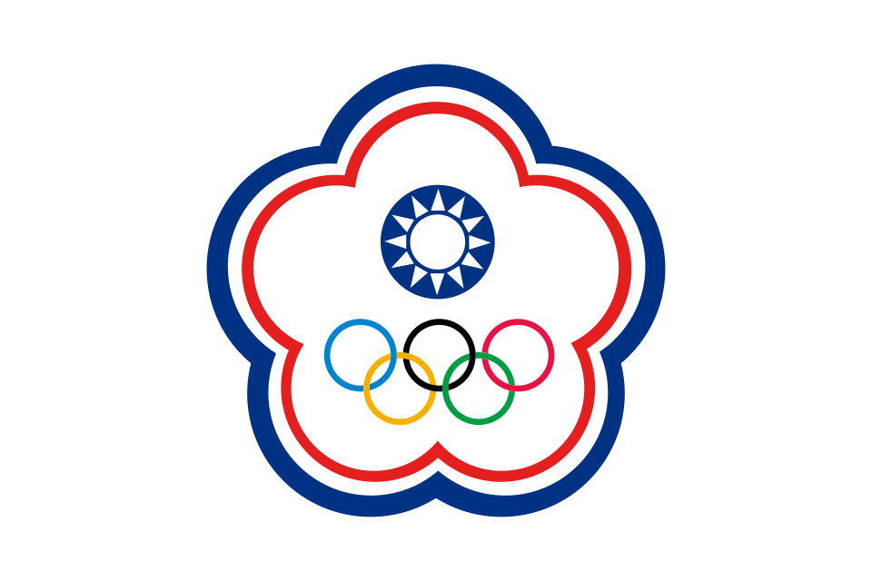 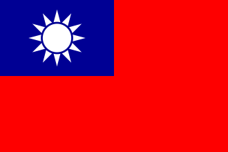
.
Federação de Futebol do Sul da Ásia (SAFF) - 7
Federação de Futebol do Bangladesh (BFF)
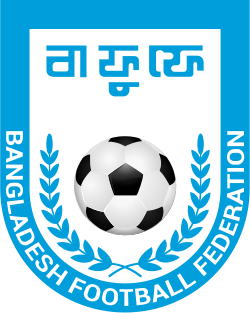Clubes do Bangladesh:
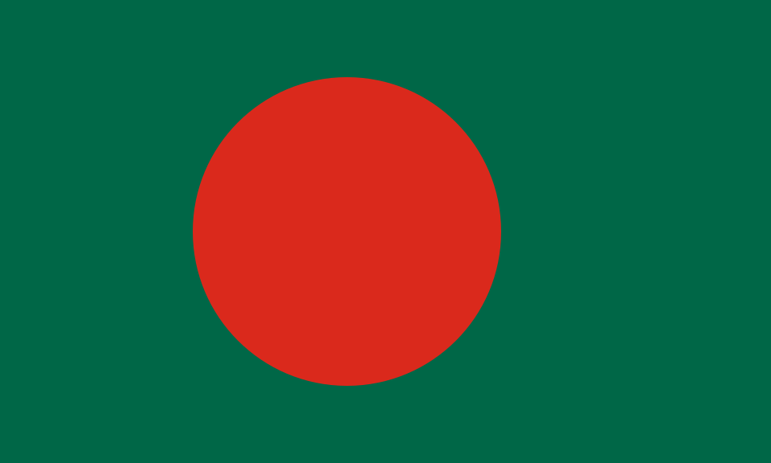Federação de Futebol do Butão (BFF)
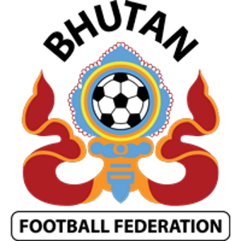Clubes do Butão:
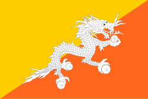Federação de Futebol da Índia (AIFF)
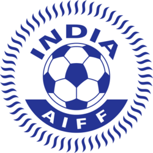Clubes da Índia:
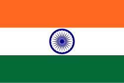Associação de Futebol das Maldivas (FAM)
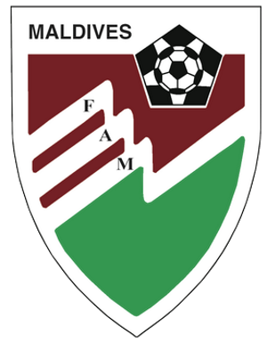Clubes das Maldivas:
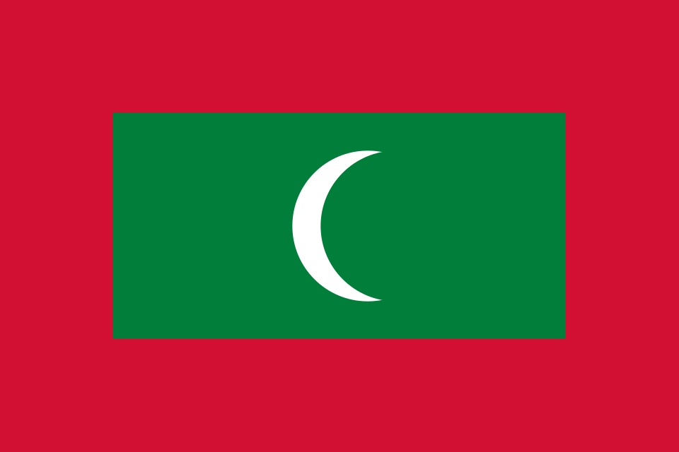Associação de Futebol do Nepal (ANFA)
Clubes do Nepal:
Federação de Futebol do Paquistão (PFF)
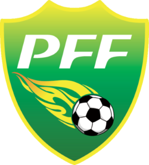Clubes do Paquistão:
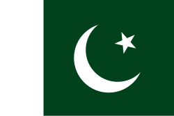Federação de Futebol do Sri Lanka (FFSL)
Clubes do Sri Lanka:
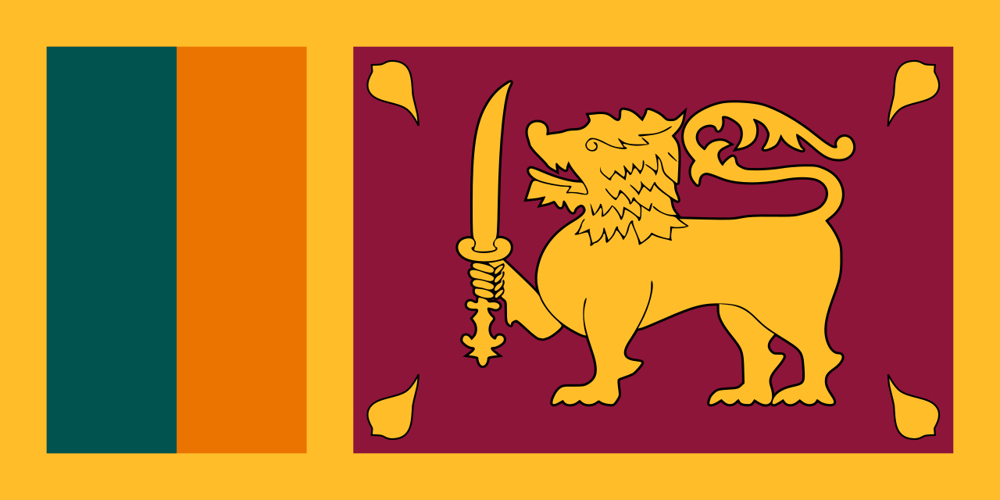
.
Federação de Futebol da Ásia Ocidental (WAFF) - 12
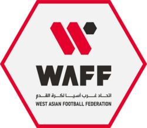Federação de Futebol da Arábia Saudita (SAFF)
Clubes da Arábia Saudita:
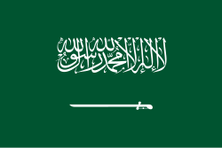
Clubes do Barém:

Associação de Futebol dos Emirados Árabes Unidos (UAEFA)
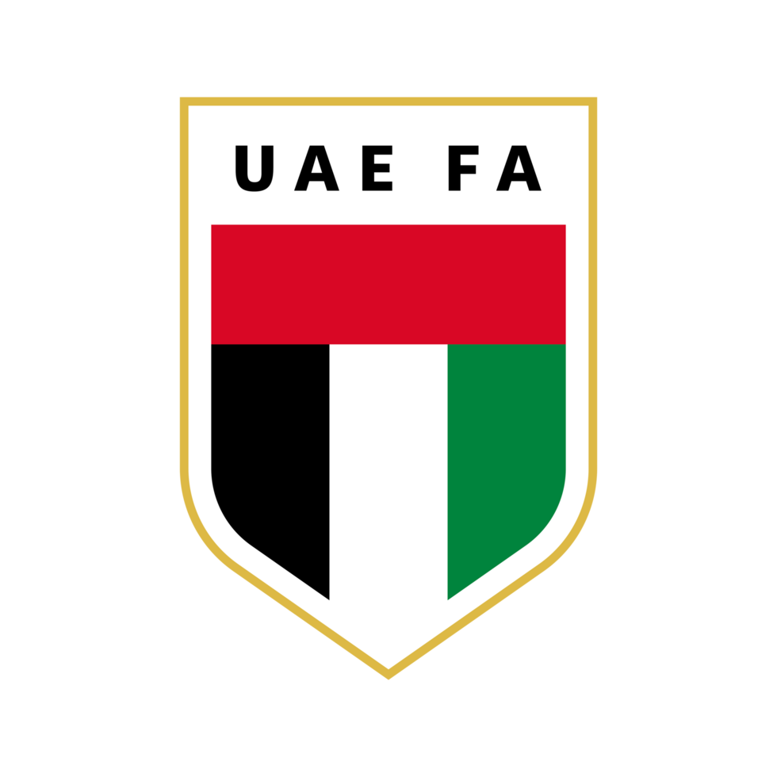Clubes dos Emirados Árabes Unidos:

Associação de Futebol do Iêmen (YFA)
Clubes do Iêmen:
Associação de Futebol do Iraque (IFA)
Clubes do Iraque:
Associação de Futebol da Jordânia (JFA)
Clubes da Jordânia: